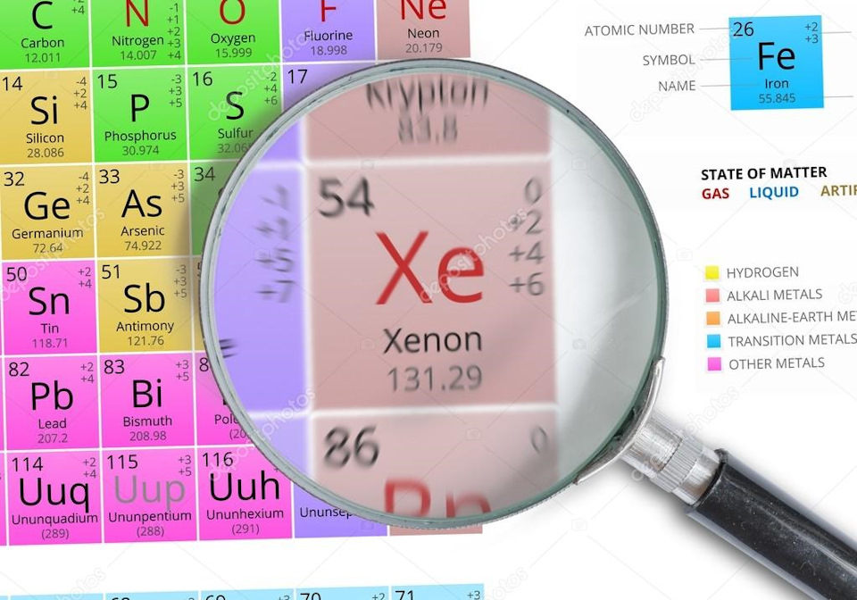
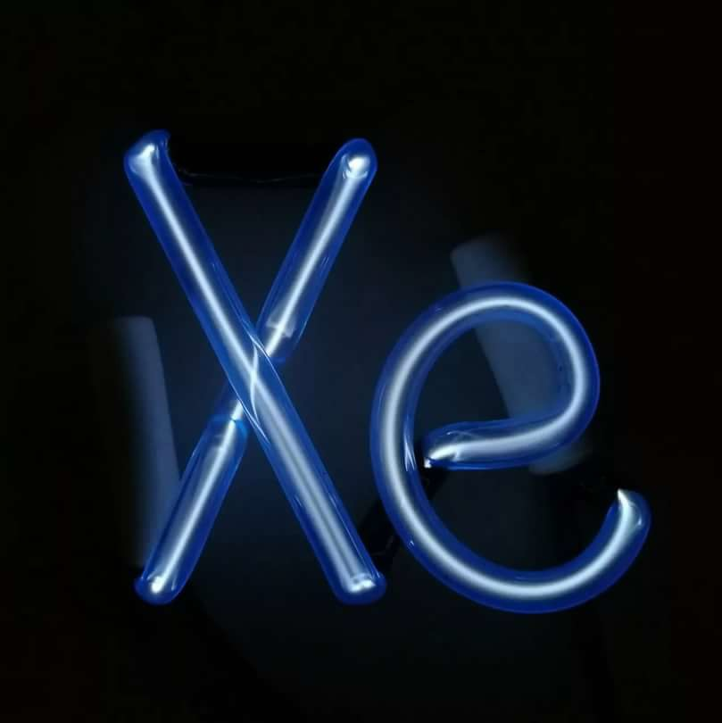

Ксенон
Ксено́н (химический символ — Xe, от лат. Xenon) — химический элемент 18-й группы (по устаревшей классификации — главной подгруппы восьмой группы, VIIIA), пятого периода периодической системы химических элементов Д. И. Менделеева, с атомным номером 54. Простое вещество ксенон — это тяжёлый благородный одноатомный газ без цвета, вкуса и запаха.

Ксенон был обнаружен как небольшая примесь к криптону. За открытие инертных газов (в частности ксенона) и определение их места в периодической таблице Менделеева Рамзай получил в 1904 году Нобелевскую премию по химии.

На Земле ксенон присутствует главным образом в атмосфере (0,866 ∙ 10–5 % по объёму). При делении природных изотопов урана 235U и 238U, а также при ядерных взрывах образуются радиоизотопы ксенона, например 133Xe (период полураспада T1/2 5,24 сут, β-излучатель) и 135Xe (T1/2 9,14 ч, β-излучатель). Ксенон открыт в 1898 г. У. Рамзаем и английским химиком М. Траверсом при спектроскопическом изучении неочищенного криптона, выделенного из наименее летучих фракций сжиженного воздуха. Название «ксенон» происходит от греч. ξένος – чужой и связано с обнаружением ксенона как примеси в криптоне.льного состояния в несвязанное генерируется лазерное излучение (105 нм для NeF*). Неон получают при низкотемпературной ректификации жидкого воздуха; объём мирового производства неона около 1 т/год (2013). Неоново-гелиевую смесь применяют в качестве рабочего тела в газовых лазерах (гелий-неоновый лазер), для заполнения газоразрядных источников света (неоновая лампа), ламп-индикаторов; жидкий неон – хладагент в криогенной технике.

Ксенон получают при разделении воздуха. Ксенон используется в электровакуумной технике (например, для заполнения ламп накаливания, газоразрядных ламп высокой мощности, импульсных источников света), как рентгеноконтрастное вещество в медицине. Радиоактивные изотопы ксенона – источники излучения в радиографии, медицинских диагностических установках и др. Фториды ксенона применяются в качестве сильных окислителей и фторирующих реагентов; эксимерные соединения ксенона – в качестве рабочего вещества газовых УФ-лазеров.